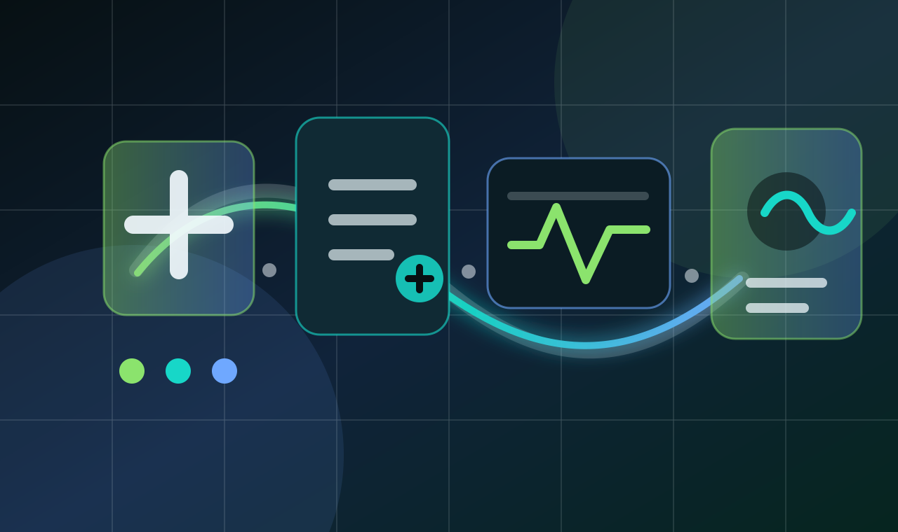

Feb 2025 - Present
AI Engineer, CRO Prime
- The problem
- Healthcare teams hold medical data in many forms, structured records and free text, and turning it into predictions people can review needs a pipeline that gives the same result every run.
- What I built
- I built four-stage pipelines (ingestion, preprocessing, training and inference) that can be re-run reliably. I designed the medical data models so a prediction service can plug in, keeping accuracy and response time in mind, and I turned requirements from three stakeholder workflows into reusable ML components and review dashboards.
- What came out
- Delivery across those three stakeholder workflows got faster, because they share the same components and dashboards.